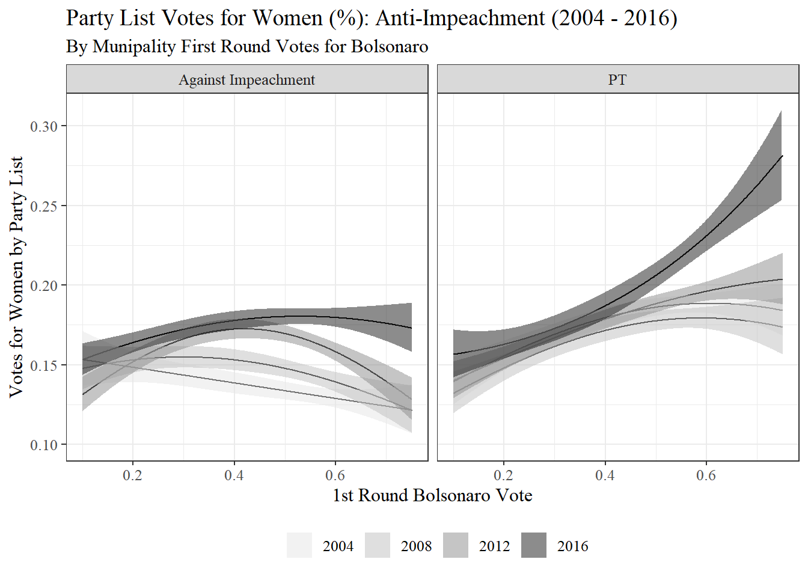
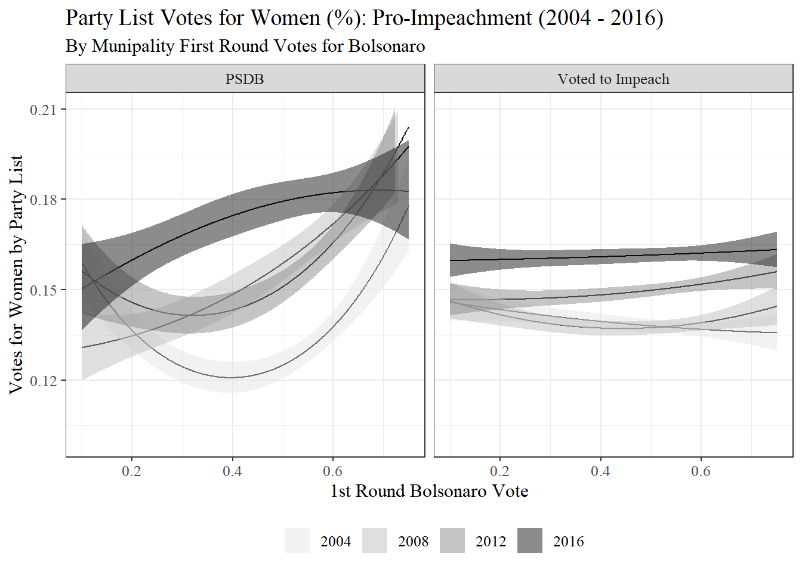
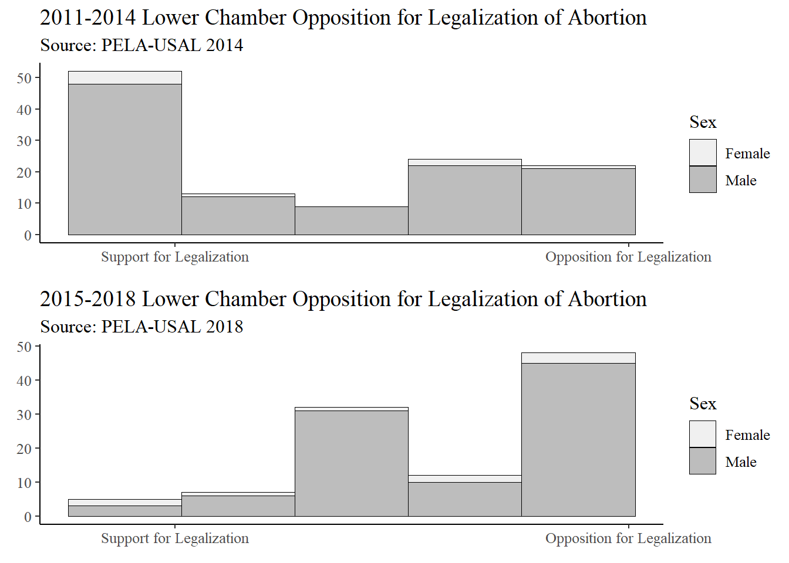
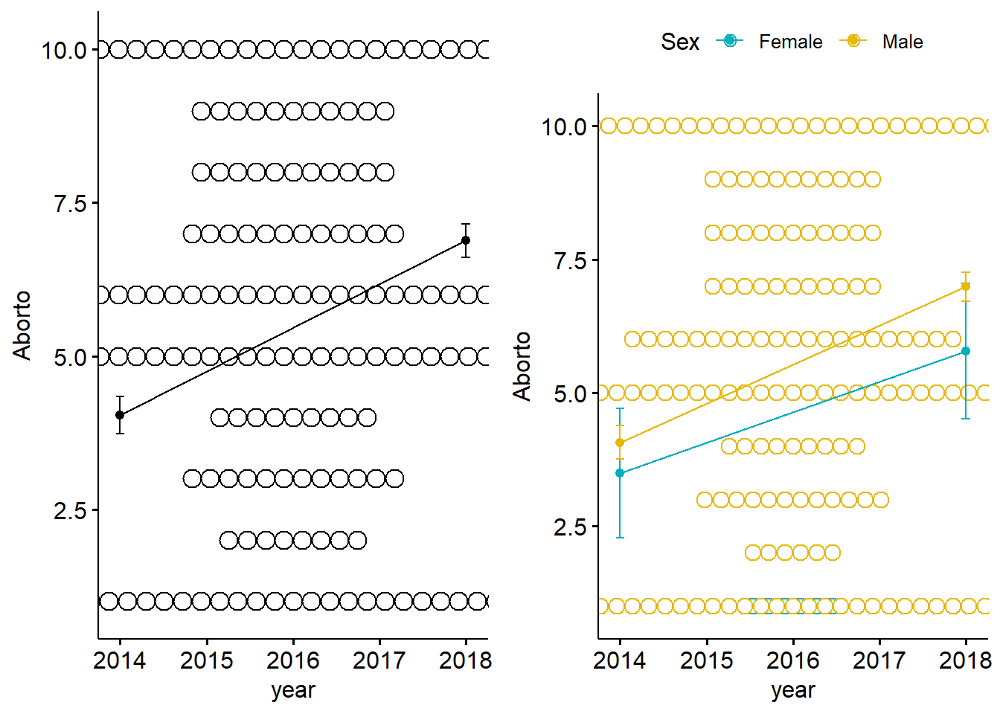
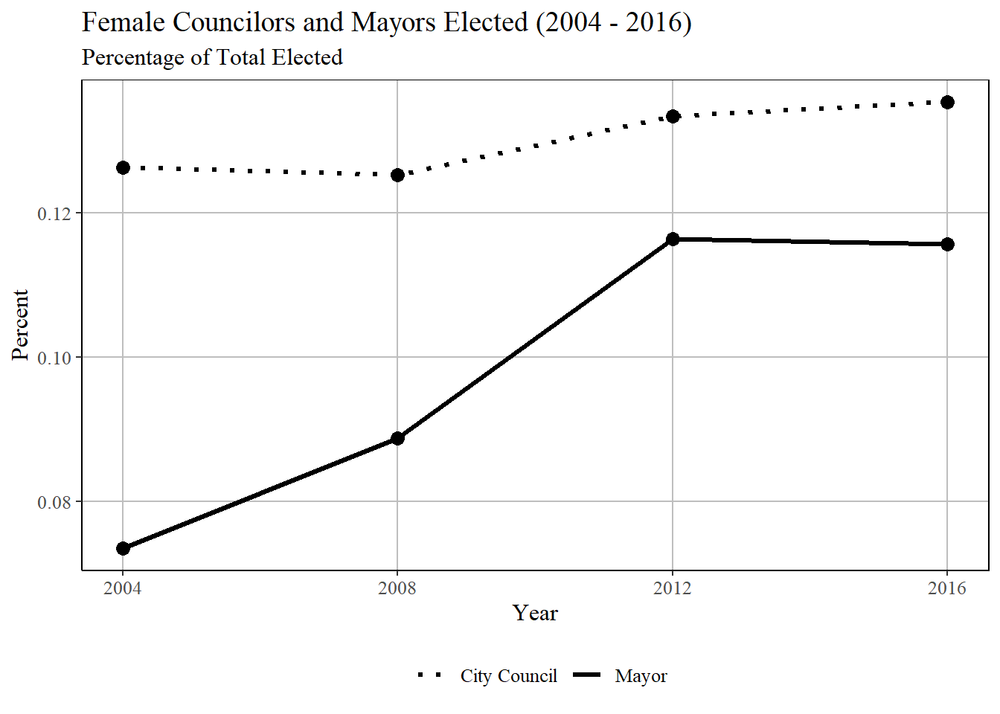
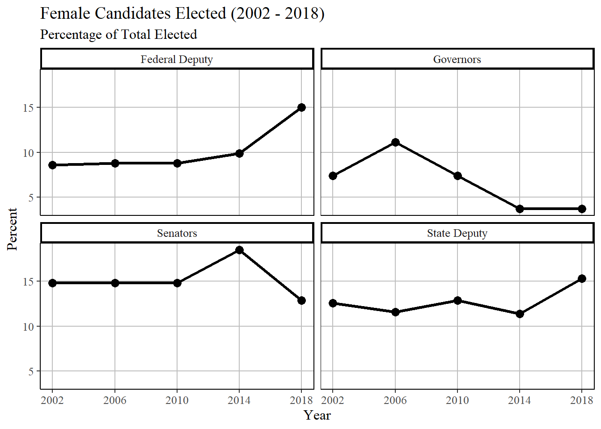
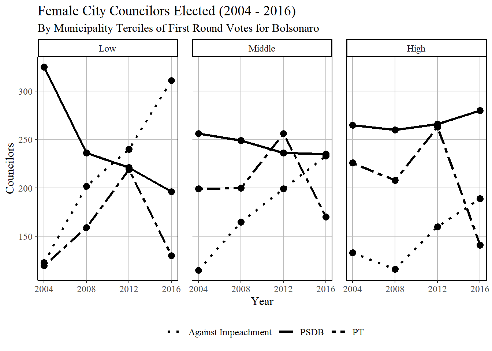
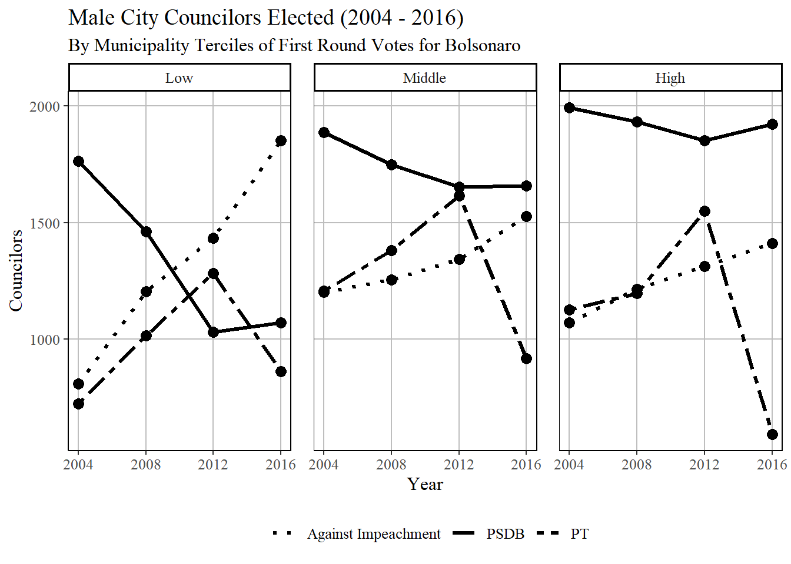
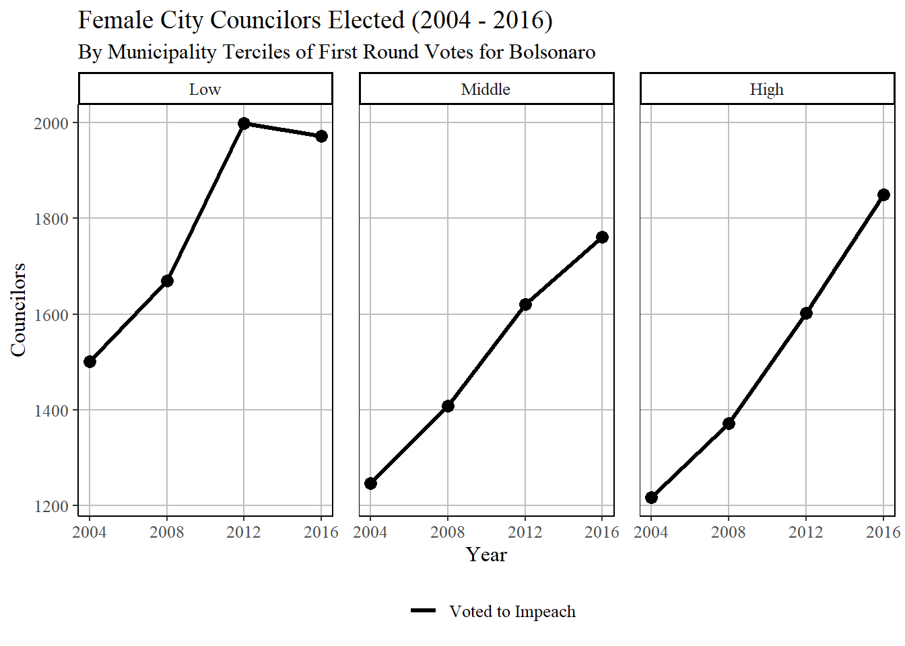
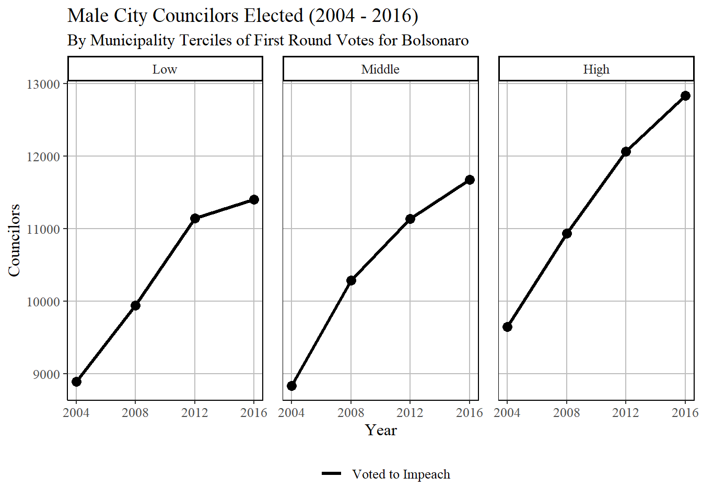

This page reviews my contributions to a co-authored book chapter analyzing how political representation for women in Brazil changed after Brazil’s first female president, Dilma Rousseff, was impeached. This impeachment involved public displays of misogynistic posturing from opponents; political backlash against Rousseff’s Workers Party (PT); and was followed by several years of right-wing rule during which many institutions promoting gender equity were dismantled.
This page contains three broad components. One research question was whether voters, who rejected the PT for legislative representation at the polls in 2016, changed their attitudes toward women as political representatives. Second, we use elite survey responses from Latin American Elites project of the University of Salamanca (PELA-USAL) to test whether the conservative legislature of 2018 had statistically significant changes in views on abortion rights compared with the 2014 legislure.Third, I created a series of visualizations that show how descriptive representation for women changed for various national and local offices over time.
library(readr)
library(dplyr)
library(tidyr)
library(ggplot2)
library(lme4)
library(stargazer)
library(scales)
library(ggeffects)
library(see)
library(gtools)
library(MuMIn)
#clear data
rm(list = ls())Two competing theories might explain changes in descriptive representation for women in Brazil after Dilma Rousseff’s impeachment. Voters might internalize the misogynistic public narratives surrounding Rousseff’s impeachment, as well as the association between female candidates and leftist parties, which would lead one to expect voters to punish female candidates at the polls. A competing theory focuses on the “anti-system” sentiment accompanying Rousseff’s impeachment. Anti-system sentiment has been shown to favor female candidates, especially in male-dominated political systems like Brazil’s, because female candidates are likely to be associated with voting out the status quo and starting fresh with new representatives.
Brazil’s party system is shaped by its open list proportional representation. Any candidate can join a party’s list. Legislative seats are distributed by votes gained by parties, and the seats are occupied by the first \(n\) candidates on that party list, where \(n\) is the number of seats won by that party. I downloaded candidate-level data for city council elections in Brazil’s 5,570 municipalities. For each party, in each city, for four election years, I calculated the proportion of votes that were won by women.
For the elections in 2004, 2008, 2012, and 2016, I use a proxy for anti-system voting that is “activated” during Rousseff’s impeachment, prior to the 2016 elections. The proxy is the future support for far-right, anti-system candidate Jair Bolsonaro in 2018. I control for party list-level variables like size of the list and wether they are in a coalition. I control for several municipality-level factors like GINI, population, and whether there is a female mayor.
The data set (too large to share on GitHub) includes 55,000 to 75,000 party lists per election year. The dependent variable is a percentage, which poses a challenge in terms of modeling. I treat each election as cross-sectional data. For each election, I run a generalized linear model that treats each single vote cast as a Bernoulli trial with “successful” trial being a vote cast for a female candidate. This is achieved by weighting each proportion value (observation outcome in the model) by the total number of votes gained by that party list. The quasi-binomial link function is similar to a logistic regression but includes an additional parameter that helps account for overdispersion. Below I run the four GLM models. The main effects of interest are the interaction between party groups and municipality-level Bolsonaro support (the anti-system proxy). The interactions include polynomial terms in order to relax strict linearity assumptions, which makes interpretation of coefficients difficult. To enable interpretation, I visualize these interactions in the following chunk.
# Polynomial, weighted GLM with controls
# Load data
ver <- readRDS("data/gender_democracy.rds") %>%
filter(!is.na(mayor.female) & !is.na(pct_bolsonaro) & !is.na(lnPOP)) %>% # This removes 2000 observations but makes models comparable for GOF tests
mutate(percent.female = Female / Party.Total) %>%
relocate(observation, ibge7, SIGLA_PARTIDO, percent.female)
m2004p <- glm(percent.female ~
no_coalition * list.size + mayor.female + GINI + lnPOP + NorthNortheast +
impeachment2 * poly(pct_bolsonaro, 2),
family = quasibinomial, weights=Party.Total, data=ver %>% filter(year=="2004"))
m2008p <- glm(percent.female ~
no_coalition * list.size + mayor.female + lag.mayor.female + GINI + lnPOP + NorthNortheast +
impeachment2 * poly(pct_bolsonaro, 2),
family = quasibinomial, weights=Party.Total, data=ver %>% filter(year=="2008"))
m2012p <- glm(percent.female ~
no_coalition * list.size + mayor.female + lag.mayor.female + GINI + lnPOP + NorthNortheast +
impeachment2 * poly(pct_bolsonaro, 2),
family = quasibinomial, weights=Party.Total, data=ver %>% filter(year=="2012"))
m2016p <- glm(percent.female ~
no_coalition * list.size + mayor.female + lag.mayor.female + GINI + lnPOP + NorthNortheast +
impeachment2 * poly(pct_bolsonaro, 2),
family = quasibinomial, weights=Party.Total, data=ver %>% filter(year=="2016"))
null2004 <- glm(percent.female ~ 1, family = quasibinomial, weights=Party.Total, data=ver %>% filter(year=="2004"))
null2008 <- glm(percent.female ~ 1, family = quasibinomial, weights=Party.Total, data=ver %>% filter(year=="2008" & !is.na(lag.mayor.female)))
null2012 <- glm(percent.female ~ 1, family = quasibinomial, weights=Party.Total, data=ver %>% filter(year=="2012" & !is.na(lag.mayor.female)))
null2016 <- glm(percent.female ~ 1, family = quasibinomial, weights=Party.Total, data=ver %>% filter(year=="2016" & !is.na(lag.mayor.female)))
# Model output
stargazer(m2004p, m2008p, m2012p, m2016p,
title = "Table 1. Party List Voting for Female City Council Candidates, 2004 - 2016",
dep.var.caption = "Percentage of Votes for Women",
#covariate.labels=c(""),
type="html",
intercept.bottom = T,
digits=2,
column.labels = c("2004", "2008", "2012", "2016"))| Percentage of Votes for Women | ||||
| percent.female | ||||
| 2004 | 2008 | 2012 | 2016 | |
| (1) | (2) | (3) | (4) | |
| no_coalition | -0.66*** | -0.13** | 0.18*** | 0.69*** |
| (0.06) | (0.06) | (0.04) | (0.05) | |
| list.size | 0.27*** | 0.31*** | 0.13*** | 0.12*** |
| (0.03) | (0.03) | (0.02) | (0.02) | |
| mayor.female | 0.13*** | -0.02 | 0.05*** | -0.003 |
| (0.02) | (0.02) | (0.02) | (0.02) | |
| lag.mayor.female | 0.08*** | 0.02 | 0.07*** | |
| (0.02) | (0.02) | (0.02) | ||
| GINI | 0.43*** | 0.84*** | 0.74*** | 0.66*** |
| (0.11) | (0.12) | (0.10) | (0.10) | |
| lnPOP | -0.04*** | -0.04*** | -0.07*** | -0.05*** |
| (0.004) | (0.004) | (0.003) | (0.003) | |
| NorthNortheast | 0.06*** | 0.10*** | 0.08*** | 0.01 |
| (0.02) | (0.02) | (0.01) | (0.01) | |
| impeachment2Against Impeachment | 0.04* | 0.19*** | 0.05** | 0.09*** |
| (0.03) | (0.03) | (0.02) | (0.02) | |
| impeachment2PSDB | 0.01 | 0.22*** | 0.03 | 0.08*** |
| (0.02) | (0.03) | (0.03) | (0.03) | |
| impeachment2PT | 0.30*** | 0.31*** | 0.17*** | 0.22*** |
| (0.02) | (0.03) | (0.02) | (0.03) | |
| impeachment2Voted to Impeach | 0.06*** | 0.13*** | -0.01 | 0.01 |
| (0.02) | (0.02) | (0.02) | (0.02) | |
| poly(pct_bolsonaro, 2)1 | -1.13 | -21.20*** | -6.35 | -19.88*** |
| (3.85) | (5.96) | (5.34) | (5.46) | |
| poly(pct_bolsonaro, 2)2 | 9.33*** | 20.75*** | -13.81*** | -17.39*** |
| (3.56) | (5.94) | (5.27) | (5.37) | |
| no_coalition:list.size | 1.18*** | 0.40*** | -0.27*** | -1.07*** |
| (0.09) | (0.11) | (0.07) | (0.07) | |
| impeachment2Against Impeachment:poly(pct_bolsonaro, 2)1 | -16.88*** | 10.23 | 16.80** | 35.76*** |
| (6.42) | (7.45) | (6.75) | (6.48) | |
| impeachment2PSDB:poly(pct_bolsonaro, 2)1 | -2.41 | 53.35*** | 21.67*** | 41.23*** |
| (5.19) | (7.20) | (7.23) | (7.48) | |
| impeachment2PT:poly(pct_bolsonaro, 2)1 | 28.60*** | 49.53*** | 43.61*** | 74.25*** |
| (6.01) | (7.51) | (6.71) | (7.84) | |
| impeachment2Voted to Impeach:poly(pct_bolsonaro, 2)1 | -5.00 | 17.82*** | 11.00** | 21.87*** |
| (3.91) | (5.96) | (5.34) | (5.42) | |
| impeachment2Against Impeachment:poly(pct_bolsonaro, 2)2 | -9.73 | -31.25*** | -11.76* | 8.51 |
| (6.14) | (7.54) | (6.82) | (6.62) | |
| impeachment2PSDB:poly(pct_bolsonaro, 2)2 | 16.78*** | -15.01** | 33.19*** | 11.71* |
| (5.05) | (7.21) | (6.85) | (7.12) | |
| impeachment2PT:poly(pct_bolsonaro, 2)2 | -19.46*** | -32.12*** | 7.67 | 27.74*** |
| (5.33) | (7.40) | (6.56) | (7.59) | |
| impeachment2Voted to Impeach:poly(pct_bolsonaro, 2)2 | -8.40** | -15.87** | 15.43*** | 17.63*** |
| (3.92) | (6.18) | (5.50) | (5.60) | |
| Constant | -1.81*** | -2.12*** | -1.44*** | -1.55*** |
| (0.05) | (0.05) | (0.05) | (0.05) | |
| Observations | 55,467 | 58,711 | 69,302 | 75,898 |
| Note: | p<0.1; p<0.05; p<0.01 | |||
# These goodness of fit tests against the null are fine but uninteresting for this demonstration.
# anova(null2004, m2004p, test = "F")
# anova(null2008, m2008p, test = "F")
# anova(null2012, m2012p, test = "F")
# anova(null2016, m2016p, test = "F")The interesting finding here is that female candidates from the PT and their allied parties “Against Impeachment” perform uniquely well in 2016 (compared with male co-partisans on their list in that year). In fact, female candidates perform well precisely in those districts marked by “anti-system” voting preferences: the right extremity of the x-axis of each subplot. For the PSDB and other parties that “Voted to Impeach”, women also perform well in 2016; however, this relative success is not strongly related to the level of anti-system sentiment in the municipality where the election is held. This provides support for the theory theory that female candidates tend to perform better when voters are seeking to punish political elites associated with the status quo, even in the face of recent misogynistic rhetoric and posturing.
# Predict and store interaction terms from GLM models
pp04 <- ggpredict(m2004p, terms = c("pct_bolsonaro[all]", "impeachment2"))
pp08 <- ggpredict(m2008p, terms = c("pct_bolsonaro[all]", "impeachment2"))
pp12 <- ggpredict(m2012p, terms = c("pct_bolsonaro[all]", "impeachment2"))
pp16 <- ggpredict(m2016p, terms = c("pct_bolsonaro[all]", "impeachment2"))
pp04$year <- "2004"
pp08$year <- "2008"
pp12$year <- "2012"
pp16$year <- "2016"
pp <- rbind(pp04, pp08, pp12, pp16)
# Two and Three - polynomial
propt_interaction <- ggplot(data = pp %>% filter(group=="PT" | group=="Against Impeachment"), aes(x=x, y=predicted, fill = year)) +
geom_line() + geom_ribbon(aes(ymin = conf.low, ymax = conf.high), alpha = .5, linetype=2) +
theme_bw() + scale_fill_grey(start = 0.9, end = 0.1) + ylim(.10, 0.31) + xlim(.1, .75) +
theme(legend.position="bottom",
legend.title = element_blank(), text=element_text(size=12, family="serif")) +
facet_wrap(~group) +
labs(title="Party List Votes for Women (%): Anti-Impeachment (2004 - 2016)",
subtitle= "By Munipality First Round Votes for Bolsonaro",
x="1st Round Bolsonaro Vote",
y="Votes for Women by Party List")
propt_interaction
impeachment_interaction <- ggplot(data = pp %>% filter(group=="PSDB" | group=="Voted to Impeach"), aes(x=x, y=predicted, fill = year)) +
geom_line() + geom_ribbon(aes(ymin = conf.low, ymax = conf.high), alpha = .5, linetype=2) +
theme_bw() + scale_fill_grey(start = 0.9, end = 0.1) + ylim(.10, 0.21) + xlim(.1, .75) +
theme(legend.position="bottom",
legend.title = element_blank(), text=element_text(size=12, family="serif")) +
facet_wrap(~group) +
labs(title="Party List Votes for Women (%): Pro-Impeachment (2004 - 2016)",
subtitle= "By Munipality First Round Votes for Bolsonaro",
x="1st Round Bolsonaro Vote",
y="Votes for Women by Party List")
impeachment_interaction
I have shown how descriptive representation (whether elites share congruent identities with the population) changed in response to the left’s political crisis. In this chapter we were also interested in whether substantive representation of women’s issues shifted during this period. We use the data from the Latin American Elites project of the University of Salamanca (PELA-USAL) to test for changes in average positions regarding support for abortion rights. I performed a one-way anova to test if the average position changed (it did) and a two-way anova to test whether this change is driven by a shift in male elites’ positions or a shift in female elites’ positions from 2014 to 2018 (females did not change more than men in a significant level).
This plot was included in the chapter, and the results of the analysis of variance models were reported in the text, which is why there is not a pretty table. Clearly we can see that opposition to abortion has increased from 2014 to 2018.
## ANOVA and Figure on Abortion from Pela Data:
###Pelas: Elite Surveys on Preferences
# I don't have permission to share this, so I made a reduced version
pela <- read.csv("data/pela.csv")
theme_set(theme_classic())
#library(cowplot)
# Histogram on a Continuous (Numeric) Variable
g <- ggplot(pela %>% filter(year == 2014), aes(Aborto)) + scale_fill_brewer(palette = "Greys") + theme(text=element_text(size=12, family="serif"))
p14 <- g + geom_histogram(aes(fill=Sex),
bins=5,
col="black",
size=.05) + # change number of bins
labs(title="2011-2014 Lower Chamber Opposition for Legalization of Abortion",
subtitle="Source: PELA-USAL 2014", x=element_blank(), y=element_blank()) +
scale_x_continuous(breaks=c(1, 10), label=c("Support for Legalization", "Opposition for Legalization"))
theme_set(theme_classic())
# Histogram on a Continuous (Numeric) Variable
g <- ggplot(pela %>% filter(year == 2018), aes(Aborto)) + scale_fill_brewer(palette = "Greys") + theme(text=element_text(size=12, family="serif"))
p18 <- g + geom_histogram(aes(fill=Sex),
bins=5,
col="black",
size=.1) + # change number of bins
labs(title="2015-2018 Lower Chamber Opposition for Legalization of Abortion",
subtitle="Source: PELA-USAL 2018", x=element_blank(), y=element_blank()) +
scale_x_continuous(breaks=c(1, 10), label=c("Support for Legalization", "Opposition for Legalization"))
#Another option
abortion_hist <- cowplot::plot_grid(p14, p18, ncol = 1, nrow = 2)
abortion_hist
These analysis of variance models show that increases in opposition to abortion rights are statistically significant from 2014 to 2018. However, the two-way model fails to reject the null that men in the legislature increased in opposition to abortion rights more than men. Both groups increased in their opposition similarly from 2014 to 2018. We discuss this in much more detail in the book chapter.
# One-way ANOVA
res.aov1 <- aov(Aborto ~ as.factor(year) , data = pela)
anova(res.aov1)Analysis of Variance Table
Response: Aborto Df Sum Sq Mean Sq F value Pr(>F)
as.factor(year) 1 452.95 452.95 47.736 5.091e-11 *** Residuals 222
2106.48 9.49
— Signif. codes: 0 ‘’ 0.001 ’’ 0.01 ’’ 0.05
‘.’ 0.1 ’ ’ 1
# Two-way ANOVA
res.aov2 <- aov(Aborto ~ as.factor(year) * as.factor(Sex), data = pela)
anova(res.aov2)Analysis of Variance Table
Response: Aborto Df Sum Sq Mean Sq F value Pr(>F)
as.factor(year) 1 452.95 452.95 47.6336 5.413e-11 *** as.factor(Sex) 1
12.90 12.90 1.3571 0.2453
as.factor(year):as.factor(Sex) 1 1.60 1.60 0.1687 0.6817
Residuals 220 2091.97 9.51
— Signif. codes: 0 ‘’ 0.001 ’’ 0.01 ’’ 0.05
‘.’ 0.1 ’ ’ 1
library("ggpubr")
p1 <- ggline(pela, x = "year", y = "Aborto",
add = c("mean_se", "dotplot"),
palette = c("#00AFBB", "#E7B800"))
p2 <- ggline(pela, x = "year", y = "Aborto", color = "Sex",
add = c("mean_se", "dotplot"),
palette = c("#00AFBB", "#E7B800"))
cowplot::plot_grid(p1, p2, ncol = 2, nrow = 1)
### Side-by-side histogram of abortion by gender.
rm(p1, p2, pela, p14, p18, g, abortion_hist)In the chapter, we review the literature highlighting the importance of equity in gender representation in politics. These visualizations structure our discussion of trends in descriptive representation in Brazil over time. Descriptive representation in Brazil is far below the approximately descriptive benchmark of 50%. This section shows where the deficits are in descriptive representation and provides some descriptive analysis of how gender representation changed in the 2016 elections, in the context of anti-system sentiment directed toward the left and their allies.
rm(p.values04, p.values08, p.values12, p.values16, pp04, pp08, pp12, pp16, null2004, null2008, null2012, null2016, m2004p, m2008p, m2012p, m2016p, m2016b)
# These are very large and will not be on my GitHub
ver <- readRDS("data/ver_inclusive.rds")
pref <- readRDS("data/pref_inclusive.rds")
# Reshape data and generate percentiles
ver.cand <- ver %>%
filter(!is.na(sex) & elected=="Elected") %>%
group_by(year, sex) %>%
summarise(value = n()) %>%
ungroup() %>%
pivot_wider(names_from=sex, values_from = value) %>%
mutate(
total = Male + Female,
pct = Female / total) %>%
select(year, pct)
pref.cand <- pref %>%
filter(!is.na(sex) & elected=="Elected") %>%
group_by(year, sex) %>%
summarise(value = n()) %>%
ungroup() %>%
pivot_wider(names_from=sex, values_from = value) %>%
mutate(
total = Male + Female,
pct = Female / total) %>%
select(year, pct)
ver.cand$office <- "City Council"
pref.cand$office <- "Mayor"
pref.ver <- rbind(pref.cand, ver.cand)
# Visualizing mayors and city councilors
pct_fem_mayor_cs <- ggplot(pref.ver , aes(x = year, y = pct)) +
geom_line(aes(linetype=office), size = 1.1) +
geom_point(size=3) +
#geom_text(aes(label=value),hjust=0, vjust=1) +
scale_x_continuous(breaks=c(2004,2008,2012, 2016)) +
scale_linetype_manual(values=c("dotted", "solid")) +
theme(legend.title = element_blank(),
#legend.justification=c(1,0),
legend.position="bottom",
panel.background = element_rect(fill = "white"),
panel.grid.major = element_line(color = "gray"),
panel.border = element_rect(color = "black", fill = NA),
legend.key = element_blank(),
text=element_text(size=12
, family="serif")) +
labs(title="Female Councilors and Mayors Elected (2004 - 2016)", subtitle= "Percentage of Total Elected", x="Year", y="Percent")
pct_fem_mayor_cs
rm(pref, pref.cand, pref.ver, ver.cand)
# This data comes from an external source and is entered manually
year <- c(2002, 2006, 2010, 2014, 2018, 2002, 2006, 2010, 2014, 2018, 2002, 2006, 2010, 2014, 2018, 2002, 2006, 2010, 2014, 2018)
office <- c("Governors", "Governors", "Governors", "Governors","Governors",
"Senators","Senators","Senators","Senators","Senators",
"Federal Deputy","Federal Deputy","Federal Deputy","Federal Deputy","Federal Deputy",
"State Deputy","State Deputy","State Deputy","State Deputy","State Deputy")
pct <- c(7.4, 11.1, 7.4, 3.7, 3.7,
14.8, 14.8, 14.8, 18.5, 12.9,
8.6, 8.8, 8.8, 9.9, 15,
12.6, 11.6, 12.9, 11.4, 15.3)
off <- data.frame(office, year, pct)
# Visualizing federal and state offices
ggplot(off , aes(x = year, y = pct)) +
#geom_line(aes(linetype=office), size = 1.1) +
geom_line(aes(), size = 1.1) +
geom_point(size=3) +
#geom_text(aes(label=value),hjust=0, vjust=1) +
scale_x_continuous(breaks=c(2002,2006,2010, 2014, 2018)) +
#scale_linetype_manual(values=c("dotted", "solid")) +
theme(legend.title = element_blank(),
#legend.justification=c(1,0),
#legend.position="bottom",
panel.background = element_rect(fill = "white"),
panel.grid.major = element_line(color = "gray"),
panel.border = element_rect(color = "black", fill = NA),
legend.key = element_blank(),
strip.background = element_rect(
color="black", fill="white", size=1.5, linetype="solid"),
text=element_text(size=12, family="serif")) +
labs(title="Female Candidates Elected (2002 - 2018)", subtitle= "Percentage of Total Elected", x="Year", y="Percent") + facet_wrap(~office)
rm(off)# reshape data and summarise party group statistics
ver.impeachment.gender <- ver %>%
filter(!is.na(sex)) %>%
group_by(year, terciles, impeachment2, elected, sex) %>%
#group_by(year, impeachment, elected, sex) %>%
summarise(value = n()) %>%
ungroup() %>%
group_by(year, impeachment2, sex) %>%
mutate(
value = ifelse(elected=="Not Elected", sum(value), value),
elected = recode_factor(elected, "Not Elected" = "Elected And Unelected"),
imp = ifelse(impeachment2=="Voted to Impeach", 1, 0)) %>%
ungroup()
# Plots
ggplot(ver.impeachment.gender %>% filter(imp==0, impeachment2!="No Federal Deputies" & elected=="Elected" & sex=="Female" ), aes(x = year, y = value)) +
geom_line(aes(linetype=impeachment2), size = 1.1) +
geom_point(size=3) +
#geom_text(aes(label=value),hjust=0, vjust=1) +
scale_x_continuous(breaks=c(2004,2008,2012, 2016)) +
scale_linetype_manual(values=c("dotted", "solid", "twodash")) +
theme(legend.title = element_blank(),
panel.spacing = unit(1, "lines"),
#legend.justification=c(1,0),
legend.position="bottom",
panel.background = element_rect(fill = "white"),
panel.grid.major = element_line(color = "gray"),
panel.border = element_rect(color = "black", fill = NA),
legend.key = element_blank(),
text=element_text(size=12, family="serif")) +
labs(title="Female City Councilors Elected (2004 - 2016)", subtitle= "By Municipality Terciles of First Round Votes for Bolsonaro", x="Year", y="Councilors") + facet_wrap(~terciles)
ggplot(ver.impeachment.gender %>% filter(imp==0, impeachment2!="No Federal Deputies" & elected=="Elected" & sex=="Male" ), aes(x = year, y = value)) +
geom_line(aes(linetype=impeachment2), size = 1.1) +
geom_point(size=3) +
#geom_text(aes(label=value),hjust=0, vjust=1) +
scale_x_continuous(breaks=c(2004,2008,2012, 2016)) +
scale_linetype_manual(values=c("dotted", "solid", "twodash")) +
theme(legend.title = element_blank(),
panel.spacing = unit(1, "lines"),
#legend.justification=c(1,0),
legend.position="bottom",
panel.background = element_rect(fill = "white"),
panel.grid.major = element_line(color = "gray"),
panel.border = element_rect(color = "black", fill = NA),
legend.key = element_blank(),
text=element_text(size=12, family="serif")) +
labs(title="Male City Councilors Elected (2004 - 2016)", subtitle= "By Municipality Terciles of First Round Votes for Bolsonaro", x="Year", y="Councilors") + facet_wrap(~terciles)
ggplot(ver.impeachment.gender %>% filter(imp==1, impeachment2!="No Federal Deputies" & elected=="Elected" & sex=="Female" ), aes(x = year, y = value)) +
geom_line(aes(linetype=impeachment2), size = 1.1) +
geom_point(size=3) +
#geom_text(aes(label=value),hjust=0, vjust=1) +
scale_x_continuous(breaks=c(2004,2008,2012, 2016)) +
scale_linetype_manual(values=c("solid")) +
theme(legend.title = element_blank(),
panel.spacing = unit(1, "lines"),
#legend.justification=c(1,0),
legend.position="bottom",
panel.background = element_rect(fill = "white"),
panel.grid.major = element_line(color = "gray"),
panel.border = element_rect(color = "black", fill = NA),
legend.key = element_blank(),
text=element_text(size=12, family="serif")) +
labs(title="Female City Councilors Elected (2004 - 2016)", subtitle= "By Municipality Terciles of First Round Votes for Bolsonaro", x="Year", y="Councilors") + facet_wrap(~terciles)
ggplot(ver.impeachment.gender %>% filter(imp==1, impeachment2!="No Federal Deputies" & elected=="Elected" & sex=="Male" ), aes(x = year, y = value)) +
geom_line(aes(linetype=impeachment2), size = 1.1) +
geom_point(size=3) +
#geom_text(aes(label=value),hjust=0, vjust=1) +
scale_x_continuous(breaks=c(2004,2008,2012, 2016)) +
scale_linetype_manual(values=c("solid")) +
theme(legend.title = element_blank(),
panel.spacing = unit(1, "lines"),
#legend.justification=c(1,0),
legend.position="bottom",
panel.background = element_rect(fill = "white"),
panel.grid.major = element_line(color = "gray"),
panel.border = element_rect(color = "black", fill = NA),
legend.key = element_blank(),
text=element_text(size=12, family="serif")) +
labs(title="Male City Councilors Elected (2004 - 2016)", subtitle= "By Municipality Terciles of First Round Votes for Bolsonaro", x="Year", y="Councilors") + facet_wrap(~terciles)
rm(ver.impeachment.gender, ver)